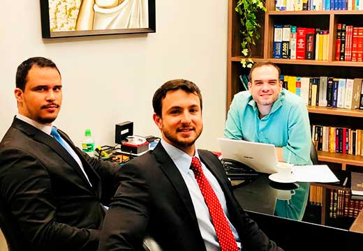
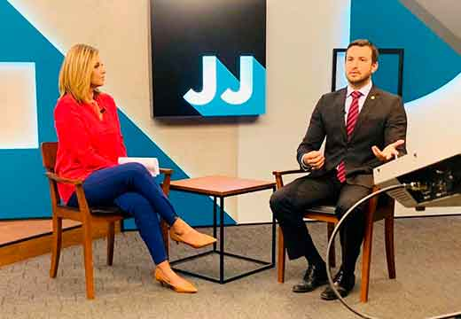
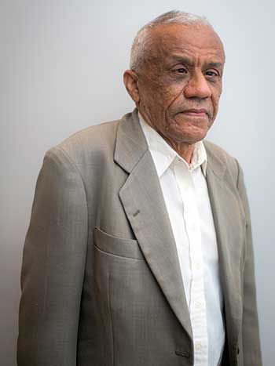

html-original/). Layout simplificado: o foco é o dado.
Imagens usam os arquivos de site/wp-content/uploads/. 8 imagens citadas nas páginas não existem na cópia (lista no fim).
37 páginas.Conte conosco
Direito Trabalhista, Previdenciário, Empresarial, Família e sucessões Civil e Consumidor.
Possuímos uma estrutura moderna de atendimento totalmente equipada e com secretariado treinado. Atendemos também pelo Whastupp, e outros programas de videoconferência.
Ao longo dos anos já tivemos a oportunidade de atender mais de 3 mil famílias e hoje administramos mais de 600 processos sendo eles judiciais e administrativos.
Formamos uma equipe especializada e apta a trabalhar desde questões mais simples, até casos complexos, que exigem o envolvimento de profissionais de diversas áreas de atuação.
O escritório João de Carvalho & Pêgo advocacia, em Brasília, presta serviços jurídicos em diversas áreas do Direito.
Áreas de atuação
Escritório de advocacia especializado em Brasília.
Nossos advogados são especialistas em INSS e Direito Previdenciário. Como podemos ajudá-lo?
Excelência em Direito
Consultoria e assessoria Jurídica em processo judicial e administrativo. Atuação ativa e personalizada nas áreas civil, trabalhista, empresarial, administrativa, previdenciário e criminal.
Veja o que os nossos clientes dizem sobre nós
O nível de atenção, seriedade e agilidade do Dr. João Filipe sempre atendeu muito bem minhas necessidades. Além disso, eles seguem uma prática muito boa de preços justíssimo. Obrigado pela força que sempre pude contar!
Sempre fui super bem atendido por toda equipe do escritório do dr. João! Trabalho profissional e de qualidade! Sempre que preciso, sei que posso contar com o dr. João! Tanto para consultorias quanto para processos! Equipe fera!!
É um excelente escritório, profissionais super qualificados e bem prestativos, atendimento de primeira!!! Obrigada por toda presteza em me ajudar!! Recomendo para todos.

Sobre Direitos
Programa transmitido pela 98,1 FM, a Rádio Estrutural
O programa de rádio “Sobre Direitos” é gravado há 4 anos pela equipe de advogados e convidados do escritório João de Carvalho & Pêgo Advocacia, auxiliado pelo comunicador Di Campos, transmitido pela 98,1 FM, a Rádio Estrutural.
É tratado no programa assuntos populares da vida das pessoas com relação ao judiciário. Temas como: contrato de compra e venda, solicitação de benefícios previdenciários, direitos da mulher gestante, e outros.
O programa tem um cunho social de auxílio aos ouvintes, de forma prática, clara e objetiva. O programa vai ao ar todas as quintas, às 13h.

You Tube & TV
Entrevistas na TV Justiça e Radio Justiça
O escritório de Advocacia João de Carvalho & Pego, presta serviço de consultoria jurídica a 9 anos. Realizou mais de 60 entrevistas na TV justiça e Radio Justiça tratando de diversos temas.
A confiança da televisão foi conquistada com muito trabalho junto a jornalistas e autoridades. A consultoria do advogado Joao Filipe de Carvalho em programas de televisão como Jornal de justiça, Academia, Saiba mais, tornou-se regular e mais frequente nos anos de 2016, 2017, 2018 e 2019.
Foi comentarista em programas ao vivo, tratando de assuntos como: manifestações populares, decretos de liberação de presos, pessoas desaparecidas, violência domestica, e muitos outros assuntos.
Nossos advogados são especialistas em Diretos sociais, Direito do Trabalho e Processo do Trabalho. Como podemos ajudá-lo?
joaodecarvalho_pego_advocacia_brasilia_escritorio_.jpg]Áreas de atuação
Consultoria e assessoria Jurídica em processo judicial e administrativo. Atuação ativa e personalizada nas áreas civil, trabalhista, empresarial, administrativa, previdenciário e criminal.
Atendemos Pessoas Físicas e Jurídicas.
Atuamos em busca de soluções práticas utilizando o direito moderno.
TRABALHISTA
IMOBILIÁRIO
PENAL
CIVIL FAMÍLIA E SUCESSÕES
PREVIDENCIÁRIO
ADMINISTRATIVO
EMPRESARIAL
Advocacia em Brasília – DF
Todos os profissionais do escritório são especialistas e pós graduados.
Quem somos
Nosso time de advogados em Brasília.
JOÃO FILIPE DE CARVALHO
OAB/DF 34.220
RICARDO PÊGO FREITAS
OAB/DF 50.702
OAB/MG 191.351
LAURA LOPES
Advogada no escritório João de Carvalho & Pêgo.

FRANCISCO LEITÃO
Bacharel em Direito na Universidade de Brasília UNB conclusão em 1983
joaodecarvalho_pego_advocacia_brasilia_escritorio_.jpg]expertise
Consultoria e assessoria Jurídica em processo judicial e administrativo. Atuação ativa e personalizada nas áreas civil, trabalhista, empresarial, administrativa, previdenciário e criminal.
Missão
Representar e assistir ao cidadão incapacitado por limitações físicas, financeiras ou pelo desconhecimento jurídico, muitas vezes provocado pelo excesso de dados duvidosos e pela dificuldade de compreensão da própria legislação.
Exigir o garantido e defender os direitos de seus clientes, de forma integral, até o reparo efetivo do dano ou quando for à tutela do interesse particular. Não limitando as ações à negativa declarada inicialmente tanto na esfera administrativas com no judiciário, sendo combativo.
Atuar, ativamente e a visualizar mais do simples pleito do direito individual, identificando sempre ao senso do direito meta individual. Buscar garantir no pedido elaborado não somente o individual, mas a todos os lesados pelo ato. Promover a Justiça Social e assim colaborar e compensar com as desigualdades existentes na sociedade brasileira. Atuando como o vetor efetivo para ressarcir o dano sofrido e as injustiças geradas pelas desigualdades.
Visão
Visa alcançar o bom reconhecimento pelo fruto de seu trabalho e obras produzidas. Através de peças elaboradas que tragam soluções efetivas e permanentes.
Visa explorar os limites da advocacia, nunca se atendo ao mínimo ou ao benefício individual, mas sim ao máximo, em prol do benefício social. Em busca da equidade e do senso proporcional.
Por fim, visa contribuir com a redução da distância da população ao poder judiciário e das restrições ao acesso da população à Justiça, combatendo o descrédito na justiça social.
Valores
Com base nos princípios da advocacia, no conhecimento moderno e atualizado da jurisprudência e legislação brasileira, reforçado pelos estudos dos mestres da doutrina jurídica, na vivência acadêmica e na militância diária perante poder judiciário. Os valores que norteiam os trabalhos a ser desenvolvidos são;
joaodecarvalhoepego_advogados_brasilia_trabalhista_.jpg]O Direito do Trabalho é o ramo jurídico que se dedica às relações de trabalho, seja ela entre empregado e empregador ou por prestadores de serviços.
Uma de suas principais características é a existência de uma parte que trabalha e outra que paga por este trabalho.
Nossa equipe conta com 2 advogados trabalhistas especialistas e um mestre em direito do trabalho, professor universitário com diversos artigos científicos escritos. Nos últimos 8 anos o escritório João de Carvalho & Pêgo Advocacia já moveu mais de 800 ações trabalhistas no Distrito Federal, Goiás, Minas Gerais, Mato Grosso, Bahia, Tocantins e São Paulo.
Nosso escritório presta serviço, inclusive, para outros escritórios de advocacia, pois somos um dos únicos, no Distrito Federal, especialistas em cálculos trabalhistas. Sendo este nosso grande diferencial, fazemos a assistência integral ao trabalhador desde o acompanhamento em uma possível rescisão, análise de acordos, cálculos de valores devidos, Reclamações Trabalhistas na justiça do trabalho, audiências, buscas por patrimônio e entrega do dinheiro ao trabalhador com segurança e transparência.
Temos experiência com as mais variadas categorias profissionais, como médicos, auxiliares de serviços gerais, publicitários, barbeiros, motoristas, integrantes do comércio varejistas em geral, bancários, cozinheiros, profissionais da construção civil e muitos outros.
Conheça, agora alguns dos direitos mais comuns na justiça do trabalho:
Trabalho Informal
É o caso que o empregado que não tem carteira assinada, ou quando o prestador de serviços não tem contrato, nesse caso, diversos direitos do trabalhador ficam prejudicados; como: FGTS, INSS, férias, 13º e muitos outros. Portanto, caso tenha trabalhado na informalidade agende um atendimento no Escritório João de Carvalho & Pêgo Advocacia e busque seus direitos.
Recisões
A rescisão pode ser por justa causa, sem justa causa ou por acordo entre empregado e empregador. Em qualquer dessas modalidades de rescisão, nós do escritório João de Carvalho & Pêgo advocacia conferimos os valores, bem como todas demais formalidades necessárias para o ato. Em atendimento, identificamos os valores faltantes e cobramos a diferença do dinheiro das empresas. Portanto, em caso de rescisão entre em contato conosco.
Advogados especialistas no assunto.
Como podemos ajudar?
Horas extras
É o campeão de ações judiciais. Praticamente todas as ações na justiça do trabalho se trata de horas extras trabalhadas, intervalos de almoço suprimidos, feriados trabalhados e noites trabalhando. Quem nunca viveu esse excesso de trabalho.
O trabalho em horas extras precisa ser remunerado com acréscimo de no mínimo 50%. Direitos ligados à jornada de trabalho como intervalo de almoço (intrajornada), intervalo entre um dia de trabalho e outro (interjornada), horas noturnas, descanso semanal remunerado-DSR, feriados, e muitos outros são direitos que podemos cobrar.
Caso tenha trabalhado em jornada extraordinária ou tenha qualquer dúvida com relação ao seu horário de trabalho, entre em contato com nosso escritório de advocacia, que nossos especialistas e mestres em direito do trabalho vão ajudar.
Acidente de trabalho e doenças laborais.
É muito comum trabalhadores terem acidentes trabalhando. Os acidentes podem ser de qualquer espécie como: quedas, choques, queimaduras, cortes, batidas de veículos, assaltos, etc. Qualquer acidente de trabalho é indenizado com danos morais, materiais e pensão. Nossos advogados sabem exatamente o que fazer em situações como esta.
Muitos trabalhadores também adoecem no trabalho, doenças como LER, depressão, doenças na coluna, pulmão, e muitas outras são doenças laborativas. Toda e qualquer doença contraída no trabalho ou agravada em razão do trabalho é indenizada.
Nossos advogados especialistas vão fazer toda a assistência desse trabalhador, desde processos perante o INSS, até ações na justiça do trabalho requerendo indenizações, pensão, o custeamento do tratamento médico, de fisioterapia, com psicólogos e outros.
Portanto, caso tenha adquirido uma doença no trabalho, ou mesmo sofrido qualquer espécie de acidente, entre em contato com um de nossos advogados e receba um atendimento especializado.
Gestantes
Mulheres grávidas não podem ser mandadas embora sem justa causa, pois a mulher neste caso possui estabilidade de emprego. Mas, ao contrário do que manda a Lei, com frequência muitas mulheres gestantes são demitidas todos os dias.
Nosso escritório já teve oportunidade de advogar em favor de mais de 50 mulheres gestantes que foram dispensadas. O amparo do escritório começa trabalhando para que ela receba licença maternidade, em seguida se cobra os direitos trabalhistas da gestante judicialmente, inclusive sua estabilidade.
Portanto, entre em contato conosco, agende um atendimento presencial ou telepresencial e permita que um de nossos advogados especialistas lhe preste serviços.
Acúmulo de função
Caixa de supermercado, atendente, auxiliar de limpeza e ajudante de carga e descarga. Você trabalha fazendo tudo isso? Então, esse é um caso claro de acúmulo de função, e merece ser remunerado com adicional. O acúmulo de função acontece quando o trabalhador faz atividades para que foi contratado e também faz atividades diferentes do cargo para que foi contratado.
Essa situação acontece com você? Se sim, entre em contato conosco. Um de nossos especialistas irá atendê-lo e tomar as providências cabíveis na Justiça do Trabalho.
Dano moral
Ofensas, abusos, assédios, socos, chutes, gritos, perseguições e outros prejuízos não pode!
O trabalhador não é obrigado a sofrer nada disso, se acontecer, nos mande uma mensagem, marque um atendimento e um dos nossos advogados especialistas vão lhe assessorar na cobrança de indenização contra a empresa ofensora.
Advogados especialistas no assunto.
Como podemos ajudar?
joaodecarvalhoepego_advogados_inss_brasilia.jpg]O Direito Previdenciário e a atuação administrativa no INSS é área jurídica relacionada à previdência social e aos benefícios assistenciais.
João de Carvalho e Pêgo Advocacia conta com profissionais qualificados e especialistas na área, aptos a prestar auxílio e solicitar benefícios relacionados a mais de 9 anos.
Todos nossos advogados estão atualizados com as reformas previdenciárias de 2019, bem como treinados para solicitar e acompanhar processos com as tecnologias implementadas em razão da pandemia.
Nosso escritório de advocacia atende em todas as áreas do Direito Previdenciário, a fim de garantir os direitos previdenciários para os momentos de necessidade, como idade avançada, doenças que incapacitam o exercício do trabalho, prisão, morte, LOAS e outros.
Atendemos os trabalhadores que laboram em qualquer área de carteira assinada, o microempreendedor que exerce atividade empresarial por conta própria, o contribuinte individual, o servidor público, o trabalhador rural, o idoso, o deficiente de baixa renda, e, ainda, militares e outros que necessitam de benefícios previdenciários.
Realizamos análises dos benefícios possíveis pelo Instituto Nacional de Seguro Social (INSS), do Regime Próprio dos Servidores Públicos, do Regime Geral de Previdência Social e do Sistema de Previdência Complementar, além de oferecermos a melhor estratégia para ser vitorioso na solicitação de tais benefícios.
Confira, a seguir, um pouco mais sobre os serviços que prestamos:
Solicitações no INSS em geral
Com anos de atuação no órgão do INSS fazendo todas as solicitações possíveis, nossos advogados possuem experiência e conhecimento para trabalhar no órgão administrativo. Pedidos como o CNIS, declaração de dependentes, contribuição retroativa, e muitos outros são feitos pelo nosso escritório especializado.
Acompanhamento de solicitações no INSS e processos judiciais em andamento
Muito comum o acompanhamento de solicitações em andamento. Muitas vezes o INSS faz exigências de diversas naturezas para prosseguir com processo administrativo. Nossa equipe de advogados está preparada para conduzir os processos administrativos, aumentando significativamente as chances de êxito dessas solicitações.
Acompanhamento no App Meu INSS
Com anos de atuação no órgão do INSS fazendo todas as solicitações possíveis, nossos advogados possuem experiência e conhecimento para trabalhar no órgão administrativo. Pedidos como o CNIS, declaração de dependentes, contribuição retroativa, e muitos outros são feitos pelo nosso escritório especializado.
Aposentadoria Por Idade Rural
Segurados especiais, vinculados a cooperativas ou sindicatos rurais também se aposentam pelo INSS, faça uma consulta e veja quais são os documentos e requisitos necessários para aposentadoria, nossos advogados especialistas em aposentadoria terão alegria em atender e tirar todas as dúvidas.
Aposentadoria Por Tempo de Contribuição
Para os que contribuíram para o INSS por longo tempo, é necessário ver com advogado especialista do escritório João de Carvalho & Pêgo advocacia se já é possível se aposentar ou quanto tempo ainda falta.
Aposentadoria Por Idade Urbana
O escritório João de Carvalho & Pêgo Advocacia já teve a honra de aposentar mais de 200 beneficiários. Este trabalho gratificante é o cargo de chefe do nosso escritório. Agende um atendimento que faremos análise da possibilidade de aposentar.
Aposentadoria Especial
Esta aposentadoria é para os trabalhadores que recebem insalubridade ao longo da vida, como médicos, faxineiros, garis, quem trabalha com materiais tóxicos, e muitos outros possuem o direito à essa aposentadoria antecipada. Consulte um de nossos advogados especialistas e veja se você já possui os requisitos para se aposentar.
Auxílio-Doença e Aposentadoria por invalidez
Nosso escritório já realizou mais de 300 solicitações dessas. São os chamados de benefícios por incapacidade, que podem ser temporários ou permanentes. O benefício mais comum no INSS.
Caso o senhor(a) tenha QUALQUER problema de saúde e contribua para o INSS, procure um dos nossos advogados para fazer essa solicitação para o senhor(a) e marcamos uma perícia. Somos especialistas neste assunto, sabemos interpretar laudos médicos, orientar como proceder em perícias. Se contratar nosso escritório sua chance de receber esse benefício vai aumentar muito.
Advogados especialistas no assunto.
Como podemos ajudar?
Auxílio-Acidente
Este benefício é destinado para quem sofreu algum tipo de acidente, seja doméstico, empregado ou acidente de trabalho. Tem cunho indenizatório e nossos advogados saberão solicitar e acompanhar da melhor forma possível.
Auxílio-Reclusão
Este benefício é destinado à família de algum beneficiário da previdência social que se encontra preso. Caso o Sr.(a) tenha algum parente preso, e que tenha capacidade de segurado, se for este o seu caso, consulte um advogado especialista em direito previdenciário da equipe do escritório João de Carvalho & Pêgo advocacia que vamos lhe ajudar.
Licença Maternidade
Para as gestantes ou para a mãe que acaba de ter filho, caso necessite de assistência de advogados, e que não recebam esse benefício da própria empresa, entre em contato com nossa equipe especializada para auxiliar.
Pensão por Morte
Nosso escritório tem orgulho em afirmar que já conseguimos mais de 100 desses benefícios para nossos clientes. Caso tenha algum parente falecido, consulte um dos nossos advogados especialistas que vamos defender seus interesses perante o órgão previdenciário ou se for o caso perante a Justiça Federal.
Benefício de Prestação Continuada (BPC)
Esse benefício assistencial é conhecido como LOAS. Todas as pessoas deficientes ou idosos de baixa renda têm direito de receber. Trata-se de benefício muito comum em nosso escritório, temos vasta experiência de como lidar com esse benefício, sabemos exatamente os documentos e requisitos necessários, bem como meios de facilitar a obtenção desse benefício.
Caso você seja idoso(a) ou deficiente (de qualquer espécie) consulte um dos nossos advogados especialistas para conseguir esse benefício que vai ajudar você e sua família.
Revisões valores dos Benefícios
Todos os benefícios acima podem ser revisados se estiverem sendo pagos de forma errada ou com valores inferiores ao devido. Nosso escritório possui profissionais especializados que podem calcular e solicitar revisão de valores e benefícios caso algum deles estiverem com alguma irregularidade.
Nosso escritório é especialista em direitos sociais, previdenciários e assistenciais. Se você precisar de qualquer dos serviços acima, entre em contato e marque um atendimento presencial ou telepresencial e seja atendido(a) por advogados especialistas com mais de 8 anos de atuação em benefícios previdenciários. Com nosso auxílio as chances do seu benefício ser conquistado será maior.
Advogados especialistas no assunto.
Como podemos ajudar?
Acidente de trabalho
É muito comum trabalhadores terem acidentes trabalhando. Os acidentes podem ser de qualquer espécie como: quedas, choques, queimaduras, cortes, batidas de veículos, assaltos, morte e etc.
A empresa tem responsabilidade com trabalhadores quando existe relação entre o trabalho e o acidente, portanto, cada caso tem que ser analisado em sua individualidade, e por isso é muito importante assistência de nossa equipe de advogados.
A assistência do nosso escritório ao trabalhador que sofreu um acidente começa imediatamente após o acidente. Ao receber o trabalhador nessa situação, prontamente solicitamos algum seguro (DPVAT por exemplo), quando for o caso, bem como o orientamos sobre a emissão da CAT, e realizamos pedido de benefício previdenciário para o INSS (auxílio-doença por exemplo). O empregado será assistido e orientado por nossa equipe do início ao fim.
Além dessa fase emergencial e extrajudicial de um acidente de trabalho, há também a fase judicial, na qual é possível cobrar os danos morais e materiais decorrentes do acidente de trabalho sofrido. Os danos morais acidentários se referem a uma quantidade de dinheiro, de natureza indenizatória, que tem o objetivo reparar o prejuízo moral sofrido. O valor dessa indenização é proporcional ao dano sofrido pelo trabalhador.
Afim de melhor explicar a situação, no que se refere ao valor da indenização, imagine a seguinte situação: uma estante desaba em dois trabalhadores no local de trabalho, um dos trabalhadores corta superficialmente sua mão, enquanto o outro trabalhador perde as duas pernas. Nessa situação o trabalhador que apenas lesionou levemente a mão terá direito a receber um valor de indenização inferior ao que perdeu as pernas, tendo em vista o dano sofrido por eles terem gravidade diferentes. Importante mencionar que cada situação deve ser levada ao judiciário para se pedir a indenização.
Além do dano moral, o trabalhador que sofre acidente de trabalho também tem direito a receber o pagamento de danos materiais, dependendo do caso. O dano material é o prejuízo que o trabalhador tem em razão do acidente, como por exemplo: gastos com hospital, remédios, fisioterapia, tratamentos de qualquer espécie e dentre outros. Entra aqui também o que o trabalhador deixou de ganhar no tempo que está recuperando, bem como a própria pensão que a empresa paga ao trabalhador, que pode chegar a ser vitalícia em alguns casos.
Temos como sócio nominal do escritório, o advogado, especialista e pós- graduado em Direito e Processo do Trabalho, o Dr. Ricardo Pêgo, este que também é professor de Direito do Trabalho, com larga experiência, inclusive de promover treinamento para outros advogados na matéria de Acidente de trabalho.
Caso você tenha sofrido algum acidente de trabalho, ou indo /voltando do trabalho ou algum serviço externo para o trabalho, seja você contratado com carteira assinada ou não, entre em contato conosco.
Ou caso você seja uma empresa e tenha acontecido um acidente de trabalho com um de seus empregados, nos envie uma mensagem, vamos acompanhar e defender os
seus interesses.
Advogados especialistas no assunto.
Como podemos ajudar?
Doença laboral
Muitos trabalhadores também adoecem no trabalho, doenças como LER, depressão, doenças na coluna, pulmão e muitas outras são doenças laborativas ou doenças ocupacionais. Toda e qualquer doença contraída no trabalho ou agravada em razão do trabalho deve ser indenizada. Há igualdade de efeitos trabalhistas dos acidentes de trabalho e das doenças ocupacionais
Apesar de pouco conhecido, muitas das doenças que são consideradas doenças ocupacionais (enfermidades nascidas ou evoluídas por causa da realização do trabalho para o empregador), podem ser encontradas em uma lista elaborada pelo Ministério do Trabalho e da Previdência Social.
Vejamos alguns exemplos trazidos por essa lista:
Essa lista não aponta todas as doenças ocupacionais, mas apenas destaca as mais comuns. Algumas doenças podem ser consideradas doenças ocupacionais pela perícia do INSS, mesmo quando ausente da relação oficial.
Com conhecimento especializado, nossos advogados vão fazer toda a assistência do trabalhador ou empregador, desde o processo administrativo perante o INSS, até ações na Justiça do Trabalho e Justiça Federal, requerendo indenizações, pensão, benefício previdenciário, o custeamento do tratamento médico, de fisioterapia, com psicólogos e outros.
Temos o conhecimento e a experiencia para detectar se a doença que sofre, que foi diagnosticada por seu médico, pode ou não ser considerada uma doença do trabalho, e após essa análise, pleitear os direitos devidos. Entre em contato com um de nossos advogados e receba um atendimento especializado.
joao_de_carvalho_e_pego_advogados_brasilia_direito_imobiliario_.jpg]O Direito Imobiliário é um ramo do Direito Privado que tem como objetivo regulamentar as relações entre indivíduos, órgãos públicos com suas propriedades, posse, e uso. Trata de imóveis rurais e imóveis urbanos, registrados e sem registro.
Estuda também os contratos imobiliários como: compra e venda, doação, locação, cessão de direitos, incorporação e outros. As questões possessórias como ações de reintegração de posse, esbulho, regularização fundiária, alteração de registro de imóveis, conflitos entre vizinhos são também estudados nesse ramo do direito.
O direito condominial também é estudado aqui como por exemplo convenções de condomínio, dívida com condôminos, alterações de área comum, notificações por infrações e todas as questões que envolve condomínios. Portanto é uma área extremamente ampla, uma vez que milhões de situações podem envolver imóveis, e nosso escritório possui experiência e competência para atuar em questões imobiliárias de qualquer espécie.
Na nossa equipe conta com o sócio sênior João de Carvalho que além de advogado, com artigos publicados sobre direito imobiliário, é formado em técnico em transações imobiliárias pelo CETREDE-GO, e possui o registro CRECI, O advogado atuou como consultor imobiliário para diversas imobiliárias do estado de Goiás, Bahia e Distrito Federal, elaborou documentos modelo para diversas empresas renomadas do segmento imobiliário.
Segue alguns dos temas estudados em direito imobiliário.
CONTRATOS IMOBILIÁRIOS
Nosso escritório trabalha com elaboração de quaisquer contratos imobiliários, sejam de transferência, de aluguel, de doação, permuta etc. Esse tipo de trabalho é necessário a contratação de advogado porque é preventivo de problemas, além de ser extremamente técnico.
Quem contrata advogado para fazer a elaboração dos documentos está se antecipando ao problema, fazendo um trabalho seguro, que irá prevenir problemas futuros. Não se pode confiar em contratos prontos a disposição na internet, porque cada negócio tem suas peculiaridades e necessidades.
Portanto contratos imobiliários é um dos cargos chefe do escritório João de Carvalho e Pêgo Advocacia, já tivemos a oportunidade de acompanhar mais de 200 transações imobiliárias sejam urbanas ou rurais, além de prestar serviços para imobiliárias renomadas que utilizam dos modelos de documentos jurídicos que elaboramos.
REINTEGRAÇÃO DE POSSE E OUTRAS AÇÕES POSSESÓRIAS
A chamadas ações possessórias são por exemplo: se você quer reaver um imóvel que perdeu, ingressar em um imóvel que tem direito, ou até mesmo proteger seu imóvel de danos e invasões, problemas com vizinhos e outros são tratados com ações possessórias e em todos os casos é necessário a presença de um advogado que atua na área de direito imobiliário.
As ações possessórias são muito antigas, existe desde as primeiras leis da humanidade e possui leis e regras próprias até os dias atuais. Os direitos reais, ou direito das coisas tem previsão do código civil e procedimentos específicos previstos no Código de Processo civil e Leis especiais, como: ação de reintegração de posse, ações reivindicatórias, ações de imissão na posse, ação de esbulho possessório, ação de dano infecto e muitas outras.
Se você tem alguma pendencia judicial ou extrajudicial envolvendo imóveis, marque uma consulta no escritório João de carvalho e Pêgo Advocacia e tire suas dúvidas.
CONSTRUTORAS, IMOBILIÁRIAS E INCORPORADORAS
Nosso escritório trabalha para construtoras de pequeno, médio e grande porte, inclusive terceirizadas de outras empresas. Fazemos todo o preventivo com relação a clientes, funcionários, instituições bancárias e até mesmo perante o estado, e também fazemos o litigioso, que são ações judiciais decorrentes de litígios imobiliários (ações judiciais).
Contratos de representação, corretagem, compra e venda, terceirização, jornada intermitente, incorporação, investimento e outros são necessários no dia a dia de uma construtora, de uma imobiliária, de uma incorporadora, ou de um investidor desse segmento, nosso escritório possui experiencia nesse tipo de negócio imobiliário.
Outra vertente de atuação do escritório é com relação á estratégias judiciais para solução e prevenção de problemas, alternativas em cartórios de registro, em órgãos municipais estaduais e ambientais. Portanto estratégias e alternativas de solução é nosso forte.
DESPEJO E CONTRATOS DE ALUGUEL
Milhares de imóveis residenciais e comerciais são alugados no Brasil. Na pandemia muito se falou sobre juros de imóveis, redução de valor de aluguel, muito se falou em despejo, e inadimplência, consequência da crise.
Contratos de aluguel e cobranças de valores referentes a locação de imóveis, como contas de agua, energia, IPTU, condomínio, ou qualquer outro tipo de inadimplência pode ser questionado judicialmente com cobranças.
O escritório João de Carvalho e Pêgo Advocacia tem experiência em resolver esse tipo de cobrança, bem como apresentar soluções jurídicas para diversos casos envolvendo contratos de aluguel e suas nuanças.
CONDOMÍNIOS
O Direito condominial cresce a cada dia, leis de fracionamento do solo urbano e rural condicionam que sejam estabelecidos condomínio entre moradores para viabilizar o fracionamento em imóveis menores, chamados condomínios horizontais.
Existe também condomínios verticais que são prédios com várias unidades de habitação. Independente de qual condomínio seja, todos eles precisam de normas, regulamentos, assembleias, síndicos e eleições etc.
O escritório João de Carvalho e Pêgo advocacia presta assessoria e consultoria jurídica para condomínios de todas as espécies, acompanha cobranças assembleias, redige ata, realiza eleições. Em caso de dúvidas sobre esse assunto entre em contato.
Advogados especialistas no assunto.
Como podemos ajudar?
joao_de_carvalho_e_pego_advogados_brasilia_direito_familia_.jpg]O direito e família e sucessões fala sobre relações familiares de toda espécie. Não é só ações clássicas como Divorcio, Pensão alimentícia, Inventário que compõe o direito de família, mas todas relações entre familiares e afetos tendo litígio ou não.
Existem muitos estudos envolvendo direito de família sem litigio, por exemplo fazendo pactos antinupciais, testamentos, planejamento familiar, e outros. Portanto o moderno direito de família ele serve para resolver problemas interesses e conflitos familiares e também para prevenir problemas.
Nosso escritório trabalha com o moderno Direito de família, trabalho com soluções práticas e apresenta alternativas de solução de conflitos. Hoje é possível fazer um divorcio no Cartório de Registro Civil, um inventário extrajudicial, alteração de nome no cartório; vejam que não é mais necessário um juiz para resolver questões familiares, e nosso escritório está preparado para lhe ajudar.
Confira, a seguir, um pouco mais sobre os serviços que prestamos:
Divórcio judicial e extrajudicial
Nosso escritório é muito indicado para esse serviço, começamos a atuar no direito de família de 2011, e de lá até a presente data 2021 já tivemos a oportunidade de fazer mais de 200 divórcios tanto judiciais como extrajudiciais.
O Divorcio judicial é feito quando tem existe um menor de 18 anos como filho, ou quando existe conflito entre o casal. Existem outras hipóteses mas estas são as principais.
Quando o divorcio é litigioso e precisa de um juiz para julgar uma divisão de bens do casal por exemplo, costuma ser um trabalho mais intenso que demanda uma estratégia de ação apurada já prevendo situações que podem acontecer no curso do processo. Nosso escritório com vasta experiencia neste tipo de processo possui
profissionais para esse serviço.
O Divórcio consensual, por sua vez ambas as partes podem contratar o mesmo advogado e realizar a partilha de bens, mudança do nome tudo no cartório. Entretanto existem casos que mesmo o casal estando de acordo ainda é necessário que o Divorcio seja feito judicialmente.
Nos produzimos conteúdo em matéria de família a muitos anos, já demos entrevistas na televisão, jornal e redes sociais falando sobre divórcio e estamos a disposição para prestar esse serviço.
União estável – seu reconhecimento e dissolução
Muito parecido com o divórcio com mudanças pontuais nos requisitos da união estável é o seu reconhecimento e dissolução. Esta ação serve para separar um casal que não foi casado no civil, com arrolamento, patilha de bens, formal de partilha e outros tramites típicos de um divórcio.
A união estável consagrada no artigo 1723 do Código Civil, dispõe que qualquer casal, seja homoafetivo ou heterossexual pode ser reconhecida a união estável se mantiverem uma relação publica e duradoura, com a finalidade de constituir Família.
Portanto uma família que não houve um casamento, pode fazer sua dissolução com partilha de bens judicialmente.
Nosso escritório possui know-how neste processo, e estamos a sua disposição para atender e trabalhar.
Pensão Alimentícia
Dependentes, crianças, idosos, deficientes, esposas, maridos todos tem direito a pensão alimentícia se comprovados os requisitos legais. O clássico caso é da criança ou adolescente criado por apenas um dos pais, outro precisa pagar pensão alimentícia. Porém, esse direito não se resume a direito menores mas também dependentes, idosos, adultos e deficientes.
Nosso escritório trabalha com essa ação a muitos anos com maestria, já implementamos a famosa PA com valor justo adequado a necessidade de quem recebe, com a possibilidade de quem paga.
Consulte-nos para saber se existe direito a pensão, a liminar para já iniciar as cobranças , e até fazer uma estimativa do quanto em dinheiro é possível cobrar a título de pensão alimentícia.
Regulamentação de visitas e guarda
São ações que servem para regulamentar a visita geralmente para menores de idade que vivem uma apenas um dos pais. Isso é um direito da criança e também do pai ou da mãe.
Nosso escritório tem experiência em regulamentar visitas sejam de pais que moram na mesma cidade ou em cidades diferentes, bem como a regulamentação de visita para pais que tem rotinas diferentes.
A guarda familiar é uma ação geralmente usada para quando um dos pais deseja a guarda do filho em detrimento de outro, uma ação que precisa ser avaliada pelo nosso escritório quanto as possibilidades e chances e sucesso.
Inventário
Ação que serve para passar bens que está em nome de uma pessoa que morreu para seus herdeiros. Existe este direito desde o inicio dos tempos. Muito a se falar sobre a ação de inventario, principalmente que agora é possível fazer direito no cartório caso cumprido os requisitos legais.
Nosso escritório presta serviço de inventario judicial e extrajudicial a muitos anos, e temos formas de simplificar esse procedimento para deixar mais barato e rápido para nossos clientes. Solicite um orçamento.
Advogados especialistas no assunto.
Como podemos ajudar?
joao_de_carvalho_e_pego_advogados_brasilia_direito_medico.jpg]No direito médico ou também chamado de “Direito a Saúde” nosso escritório trabalha para ambas as partes: para médicos, hospitais e planos de saúde e também para pacientes que por algum motivo precisa entrar com alguma ação judicial envolvendo o direito à saúde.
A saúde é um direito fundamental que possui previsão constitucional que dispõe que todos os entes da federação: União, Estados, Municípios têm a obrigação de prestar assistência à saúde para todos indistintamente.
Dessa previsão constitucional se baseiam diversas leis e ações envolvendo direito médico como por exemplo: ações para conseguir leitos de UTI, ações para obrigar o estado a fornecer determinado medicamento ou tratamento, ações contra plano de saúde que se recusam a custear determinada Cirurgia/ tratamento/internação, etc.
Nosso escritório tem experiência com as discussões envolvendo responsabilidades, por exemplo: responsabilidade do médico em caso de erro médico,
responsabilidade do hospital, responsabilidade do estado e outros.
Temos conhecimento de quando há responsabilidade por reparação de danos morais e materiais em falhas nos procedimentos estéticos, envolvendo clinicas e hospitais particulares de qualquer natureza, procedimentos odontológicos e outros.
Trabalhamos também em processos para defender profissionais da saúde na cobrança de seus honorários, direitos trabalhistas, plantões, piso salarial, bem como aposentadoria e outros.
Demonstrada a abrangência que é o direito médico ou direito a saúde segue alguns temas de destaque que o escritório João de Carvalho & Pêgo Advocacia trabalha.
Honorários de profissionais de saúde
O presente serviço destina-se a cobrar honorários, contratos ou direitos trabalhistas para médicos, enfermeiros, técnicos de laboratório, farmacêuticos, nutricionistas, fisioterapeutas, estetas ou qualquer outro profissional na área da saúde que tenha dinheiro para receber, seja de empresas ou de pacientes.
Independente se o profissional for autônomo ou empregado, se existe contrato escrito ou não, se foi apenas um procedimento ou um tratamento longo, se o paciente morreu ou está enfermo, se a clínica fechou ou mudou de nome, enfim… em todas essas circunstâncias o direito moderno apresenta soluções e o escritório João de Carvalho & Pêgo advocacia sempre apresenta alternativas de soluções.
Portanto se você é um profissional da saúde e possui algum honorário ou credito para receber proveniente do seu trabalho entre em contato com nosso escritório e conheça as alternativas de soluções.
Erro médico
Este serviço destina-se a pacientes, ou seus familiares, que foram vítimas de erro médico cometido por profissionais da saúde. Qualquer profissional pode cometer erro, médicos, enfermeiros, dentistas, estetas, e muitos outros.
Importante deixar claro que erro médico, na maioria dos casos, precisa ser grosseiro, um erro que salta aos olhos que na concepção de outros médicos / peritos é um erro claro. Entendimentos divergentes entre profissionais da saúde não é erro médico.
Por exemplo se um médico diante de uma situação de vida ou morte do paciente decide amputar uma das pernas dele para salva-lo, isso não é um erro médico, mesmo existindo outras formas de curar o paciente. Agora esse mesmo medico amputa a perna errada do paciente e ele permanece com sua saúde prejudicada e sem uma perna nesse caso é um erro médico.
Casos clássicos de erros médicos é quando o profissional esquece instrumentos dentro de um paciente, ou que coloca uma prótese dentária que cai com primeiro uso, que pratica uma eutanásia (crime), uma prótese mamaria que cai para o umbigo, e muitos outros são considerados erros médicos.
Assim, a ocorrência de erro médico precisa de uma avalição caso a caso, de cunho jurídico e pericial, sendo necessária a contratação de advogado especializado como os do escritório João de Carvalho & Pêgo advocacia, que já possui mais de 80 ações em Brasília que trata do assunto.
Portanto se você ou seus familiares tiveram um caso de erro médico ou tem dúvidas sobre assunto entre em contato conosco.
Advogados especialistas no assunto.
Como podemos ajudar?
Liminares para internação ou medicação
São também ações de obrigação de fazer movidas contra o estado, com pedido liminar, quando algum hospital público se recusa a fornecer o tratamento de saúde adequado ao paciente, seja por lotação dos leitos de UTI, seja porque acabou o medicamento ou ainda porque não tem médicos disponíveis ou por qualquer outro motivo.
Com essa ação o judiciário obriga o poder publico a cumprir a necessidade de saúde do cidadão seja ela uma cirurgia, uma internação etc.
Entes da federação (união, estados, municípios) são obrigados o fornecer tratamento intensivo e medicamentos, não importa qual medicamento seja ou qual tratamento seja.
Evidentemente para se buscar uma liminar nesses casos é necessário um laudo médico expondo a urgência no tratamento e que deixe o juiz seguro para amparar a necessidade urgente da saúde do interessado.
O escritório João de Carvalho & Pêgo advocacia tem o prazer em ajudar pessoas enfermas e que necessita de cuidados médicos urgentes, temos condições de orientar quais as melhores alternativas possíveis, em caso de duvidas entre em contato conosco.
PLANOS DE SAUDE
São geralmente ações de obrigação de fazer com pedido de danos morais e liminar. Quando uma pessoa possui plano de saúde, paga regularmente e quando precisa do plano para cobrir algum procedimento, consulta ou tratamento se negam a cobrir.
Acontece demais no Brasil, só no escritório João de Carvalho & Pêgo advocacia temos dezenas de ações contra planos de saúde só para exigir o custeio de determinado procedimento e pedir danos morais.
Muitos casos envolvendo planos de saúde é possível pedir uma liminar para que o procedimento já seja feito imediatamente e depois só resta a discussão envolvendo os danos morais que é um valor indenizatório para reparar o dano sofrido do paciente, é também uma punição pedagógica ao plano de saúde para não acontecer novamente.
Portando se você tece algum procedimento recusado pelo plano de saúde entre em contato com nosso escritório que podemos obrigar judicialmente ele a custear o tratamento de saúde pertinente.
Advogados especialistas no assunto.
Como podemos ajudar?
Sobre Direitos
Programa transmitido pela 98,1 FM, a Rádio Estrutural
O programa de rádio “Sobre Direitos” é gravado há 4 anos pela equipe de advogados e convidados do escritório João de Carvalho & Pêgo Advocacia, auxiliado pelo comunicador Di Campos, transmitido pela 98,1 FM, a Rádio Estrutural.
É tratado no programa assuntos populares da vida das pessoas com relação ao judiciário. Temas como: contrato de compra e venda, solicitação de benefícios previdenciários, direitos da mulher gestante, e outros.
O programa tem um cunho social de auxílio aos ouvintes, de forma prática, clara e objetiva. O programa vai ao ar todas as quintas, às 13h.
Assista algumas entrevistas
You Tube & TV
Entrevistas na TV Justiça e Radio Justiça
O escritório de Advocacia João de Carvalho & Pego, presta serviço de consultoria jurídica a 9 anos. Realizou mais de 60 entrevistas na TV justiça e Radio Justiça tratando de diversos temas.
A confiança da televisão foi conquistada com muito trabalho junto a jornalistas e autoridades. A consultoria do advogado Joao Filipe de Carvalho em programas de televisão como Jornal de justiça, Academia, Saiba mais, tornou-se regular e mais frequente nos anos de 2016, 2017, 2018 e 2019.
Foi comentarista em programas ao vivo, tratando de assuntos como: manifestações populares, decretos de liberação de presos, pessoas desaparecidas, violência domestica, e muitos outros assuntos.
joaodecarvalho_pego_advocacia_brasilia_escritorio_.jpg]Contato
Sinta-se à vontade para ligar, enviar uma mensagem ou, se preferir, preencher o formulário abaixo.
Direito Trabalhista, Previdenciário, Empresarial, Família e sucessões Civil e Consumidor.
Consultoria e assessoria Jurídica em processo judicial e administrativo. Atuação ativa e personalizada nas áreas civil, trabalhista, empresarial, administrativa, previdenciário e criminal.
Endereço
Qd 1, Conjunto 1, Lt 25, Sala 202, Setor Leste – Cidade Estrutural, Brasília – DF
joaofilipemc@gmail.com
Celulares
(61) 98172-2822
(61) 99627-5602
Estamos aqui
Welcome to Jupiter Demos Sites. This is your first post. Edit or delete it, then start blogging!
Welcome to Jupiter Demos Sites. This is your first post. Edit or delete it, then start blogging!
Welcome to Jupiter Demos Sites. This is your first post. Edit or delete it, then start blogging!
Conte conosco
Direito Trabalhista, Previdenciário, Empresarial, Família e sucessões Civil e Consumidor.
Possuímos uma estrutura moderna de atendimento totalmente equipada e com secretariado treinado. Atendemos também pelo Whastupp, e outros programas de videoconferência.
Ao longo dos anos já tivemos a oportunidade de atender mais de 3 mil famílias e hoje administramos mais de 600 processos sendo eles judiciais e administrativos.
Formamos uma equipe especializada e apta a trabalhar desde questões mais simples, até casos complexos, que exigem o envolvimento de profissionais de diversas áreas de atuação.
O escritório João de Carvalho & Pêgo advocacia, em Brasília, presta serviços jurídicos em diversas áreas do Direito.
Áreas de atuação
Escritório de advocacia especializado em Brasília.
Nossos advogados são especialistas em INSS e Direito Previdenciário. Como podemos ajudá-lo?
Excelência em Direito
Consultoria e assessoria Jurídica em processo judicial e administrativo. Atuação ativa e personalizada nas áreas civil, trabalhista, empresarial, administrativa, previdenciário e criminal.
Veja o que os nossos clientes dizem sobre nós
O nível de atenção, seriedade e agilidade do Dr. João Filipe sempre atendeu muito bem minhas necessidades. Além disso, eles seguem uma prática muito boa de preços justíssimo. Obrigado pela força que sempre pude contar!
Sempre fui super bem atendido por toda equipe do escritório do dr. João! Trabalho profissional e de qualidade! Sempre que preciso, sei que posso contar com o dr. João! Tanto para consultorias quanto para processos! Equipe fera!!
É um excelente escritório, profissionais super qualificados e bem prestativos, atendimento de primeira!!! Obrigada por toda presteza em me ajudar!! Recomendo para todos.
Sobre Direitos
Programa transmitido pela 98,1 FM, a Rádio Estrutural
O programa de rádio “Sobre Direitos” é gravado há 4 anos pela equipe de advogados e convidados do escritório João de Carvalho & Pêgo Advocacia, auxiliado pelo comunicador Di Campos, transmitido pela 98,1 FM, a Rádio Estrutural.
É tratado no programa assuntos populares da vida das pessoas com relação ao judiciário. Temas como: contrato de compra e venda, solicitação de benefícios previdenciários, direitos da mulher gestante, e outros.
O programa tem um cunho social de auxílio aos ouvintes, de forma prática, clara e objetiva. O programa vai ao ar todas as quintas, às 13h.
You Tube & TV
Entrevistas na TV Justiça e Radio Justiça
O escritório de Advocacia João de Carvalho & Pego, presta serviço de consultoria jurídica a 9 anos. Realizou mais de 60 entrevistas na TV justiça e Radio Justiça tratando de diversos temas.
A confiança da televisão foi conquistada com muito trabalho junto a jornalistas e autoridades. A consultoria do advogado Joao Filipe de Carvalho em programas de televisão como Jornal de justiça, Academia, Saiba mais, tornou-se regular e mais frequente nos anos de 2016, 2017, 2018 e 2019.
Foi comentarista em programas ao vivo, tratando de assuntos como: manifestações populares, decretos de liberação de presos, pessoas desaparecidas, violência domestica, e muitos outros assuntos.
Nossos advogados são especialistas em Diretos sociais, Direito do Trabalho e Processo do Trabalho. Como podemos ajudá-lo?
Sede em BrasíliaQd 1, Conjunto 1, Lt 25, Sala 202, Setor Leste - Cidade Estrutural - Brasília-DF
Brasília, SHIS, QL 18, CJ 06, casa 19, Lago Sul, CEP 71650065, Brasília-DF
joaofilipemc@gmail.com
(61) 98172-2822 (61) 99627-5602
Goiás, Rua Matutina, Centro Histórico, Casa 9, CEP 72 Pirenópolis-GO
Minas Gerais Rua Úrsula Paulino, nº 1658, Sala B, Betânia, CEP 30580-003, Belo Horizonte-MG
O HTML referencia estes arquivos, mas eles não estão na cópia, e o servidor atual devolve a landing nova no lugar (não a imagem).
| Arquivo | URL original | Páginas |
|---|---|---|
joao_carvlho_pego_advocacia_fotografia_01.jpg | https://jcp.adv.br/wp-content/uploads/2017/03/joao_carvlho_pego_advocacia_fotografia_01.jpg | 3 |
joao_de_carvalho_e_pego_advogados_brasilia_direito_familia_.jpg | https://jcp.adv.br/wp-content/uploads/2022/03/joao_de_carvalho_e_pego_advogados_brasilia_direito_familia_.jpg | 3 |
joao_de_carvalho_e_pego_advogados_brasilia_direito_imobiliario_.jpg | https://jcp.adv.br/wp-content/uploads/2022/03/joao_de_carvalho_e_pego_advogados_brasilia_direito_imobiliario_.jpg | 3 |
joao_de_carvalho_e_pego_advogados_brasilia_direito_medico.jpg | https://jcp.adv.br/wp-content/uploads/2022/03/joao_de_carvalho_e_pego_advogados_brasilia_direito_medico.jpg | 3 |
joao_de_carvalho_e_pego_advogados_brasilia_fachada.jpg | https://jcp.adv.br/wp-content/uploads/2020/07/joao_de_carvalho_e_pego_advogados_brasilia_fachada.jpg | 3 |
joaodecarvalho_pego_advocacia_brasilia_escritorio_.jpg | https://jcp.adv.br/wp-content/uploads/2020/07/joaodecarvalho_pego_advocacia_brasilia_escritorio_.jpg | 4 |
joaodecarvalhoepego_advogados_brasilia_trabalhista_.jpg | https://jcp.adv.br/wp-content/uploads/2021/06/joaodecarvalhoepego_advogados_brasilia_trabalhista_.jpg | 2 |
joaodecarvalhoepego_advogados_inss_brasilia.jpg | https://jcp.adv.br/wp-content/uploads/2021/06/joaodecarvalhoepego_advogados_inss_brasilia.jpg | 2 |